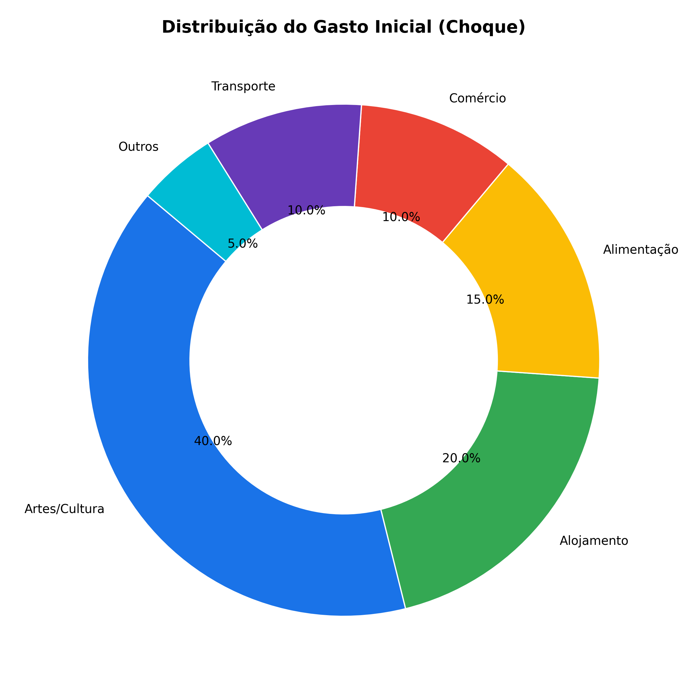
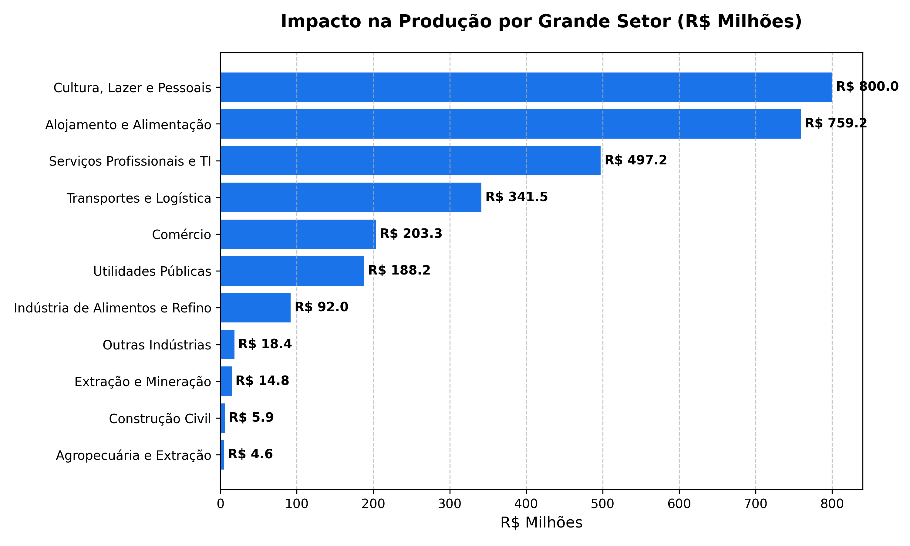
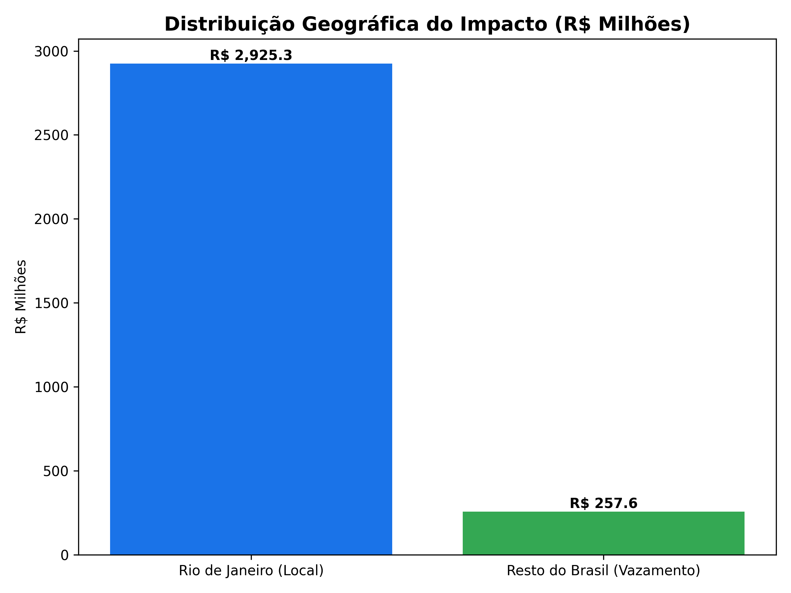

Análise de Impacto Econômico: Rock in Rio
Esta nota técnica detalha o impacto econômico gerado pelo festival Rock in Rio na economia do Estado do Rio de Janeiro. Utilizando a metodologia de Insumo-Produto (Leontief), estimamos como um aporte inicial de R$ 2 bilhões repercute em toda a cadeia produtiva fluminense e nacional.
O choque de demanda final foca nos setores de maior intensidade no evento, como Cultura, Lazer, Hotelaria e Alimentação.

A estrutura produtiva do Rio de Janeiro responde de forma robusta ao evento, com destaque para o setor hoteleiro e de serviços profissionais.

Parte da demanda gerada pelo festival transborda para o restante do Brasil através da compra de insumos interestaduais.
